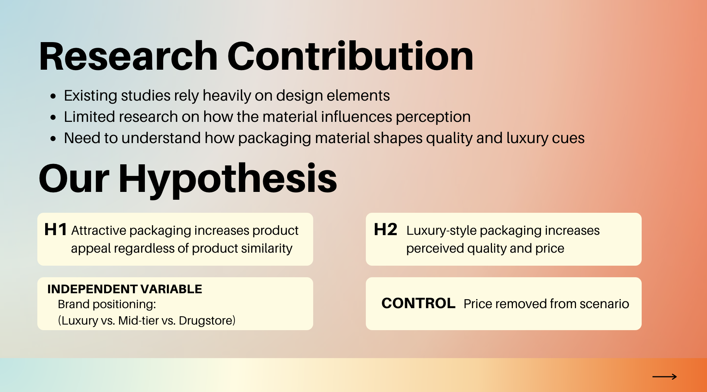
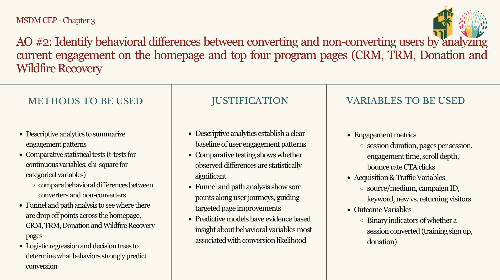
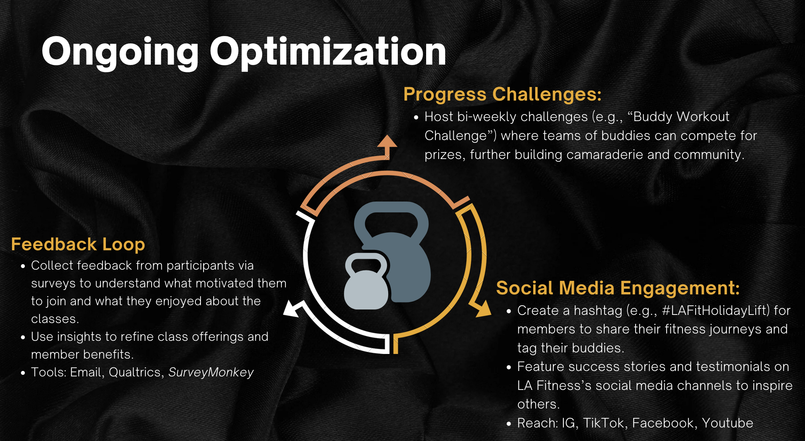

Digital Marketing Portfolio
Portfolio Presentation
MS Digital Marketing · Cal Poly Pomona
At a Glance
Project 1 · AI Research
Used ChatGPT to build a detailed customer persona for Rare Beauty, exploring how generative AI can accelerate consumer insight work in brand strategy.
Objective
Develop a research-backed customer persona using AI for the brand of my choosing, which ended up being Rare Beauty.
Method
Iterative ChatGPT prompting, persona framework design, research on Rare Beauty's current target audience
Key Takeaway
AI tools can meaningfully accelerate persona research when paired with strategic prompting and research
Project 2 · Qualtrics Survey
Collaborated with a team to design and field a survey examining how product packaging influences consumer buying behavior — from first impression to final purchase.
Method
Team-designed survey in Qualtrics, quantitative response analysis
Skills Applied
Survey methodology, question design, collaborative research, data interpretation
Key Takeaway
There were some surprises with the surveyors believing high end was the drug store brand.

Project 3 · Capstone
Year-long capstone with the Trauma Resource Institute — using GA4, BigQuery, and Markov Chain models to understand behavioral differences between converters and non-converters.
Problem
Users visited TRI's site but rarely converted to sign-ups or donations
Finding
Converters are more likely to have a longer journey and non-converters are not staying or exploring the pages for long.
Recommendation
Work on making the user journey simpler, many of TRI's pages had information deep within the page.

Project 4 · Mock Campaign
In class, my team was given a prompt of a mock holiday campaign for LA Fitness and incorporating their buddy passes. The target audience was the buddy and to encourage them to sign up for a membership.
Strategy
Holiday urgency + social proof + dual incentive (member reward + friend access)
Channels
Instagram, TikTok · #LAFitHolidayLift
Key Takeaway
Understanding the necessity for ongoing optimization and social media presence.

Project 5 · Social Media Strategy
From an article, "Bunch of jerks: How brands can benefit by reappropriating insults" by Katherine M. Du, Keisha M. Cutright and Lingrui Zhou, my group assessed where it was appropriate to use humor in brand awareness.
Framework
Included real promotions, such as e.l.f beauty and the NFL, in order to include real life scenarios
Skills Applied
Social strategy, brand tone analysis, crisis communication frameworks
Key Takeaway
Humor builds brand equity, but context, timing, and audience trust determine when it's a risk
When humor works
Brand not directly at fault · Audience has positive sentiment · Issue is lighthearted in nature
When to stay serious
Direct harm or controversy · Public trust is at stake · Audience is emotionally invested
The takeaway
Be cautious, understand where the line is before making a joke.